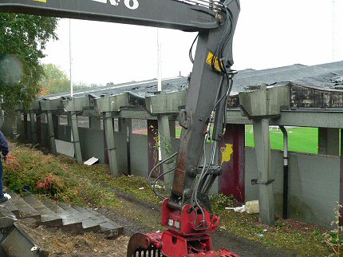
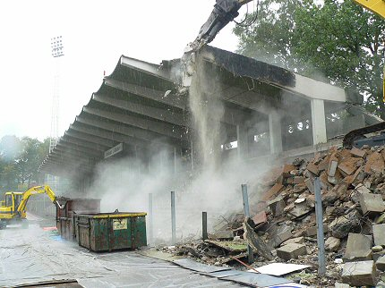
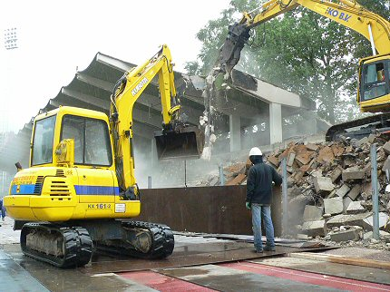
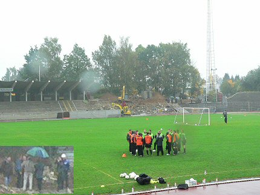
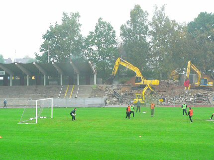
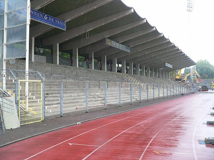

|
Sloop Northsite 19 oktober 2005
|

Er arriveren steeds meer sloopmachines en tegen elf uur 's morgens wordt
het prikkeldraad achter de tribune weggetrokken. Daarna wordt er vanaf de
oostkant van de tribune pijler voor pijler gesloopt.

Een gigantische knijptang met een kop als een draak knaagt de stukken
beton moeiteloos doormidden.

Om de atletiekbaan te beschermen worden er eerst rubberen matten over
heen gelegd en daarna stalen platen. Hierover weer een laag plastic.

Een bizar tafereel ontvouwt zich op Kaalheide. Terwijl de selectie traint
onder de gestaag vallende regen, wordt op de achtergrond de oude
Northside gesloopt.
Oud-speler Wiel Coerver (inzet) zou zelf ook achter de sloopmachine gaan
zitten, maar het bleef bij poseren onder de paraplu.

In totaal zijn vier knaag- en graafmachines actief.

Hier zijn al 7 pijlers gesloopt!
© Koempels Pleasure Dome
|